Los orígenes · Clásico
Museo del automóvil · Lima, Perú
El automóvil, hecho experiencia.
Clásicos extraordinarios. Ingeniería contemporánea.
Descubrir ARTECH ↓La colección
Distintas épocas. Una misma pasión.
Historia, diseño e ingeniería en una colección viva.
2010 · Contemporáneo
Porsche 911 GT3
1986 · Clásico
Porsche 911 Turbo
Una mirada más cercana.

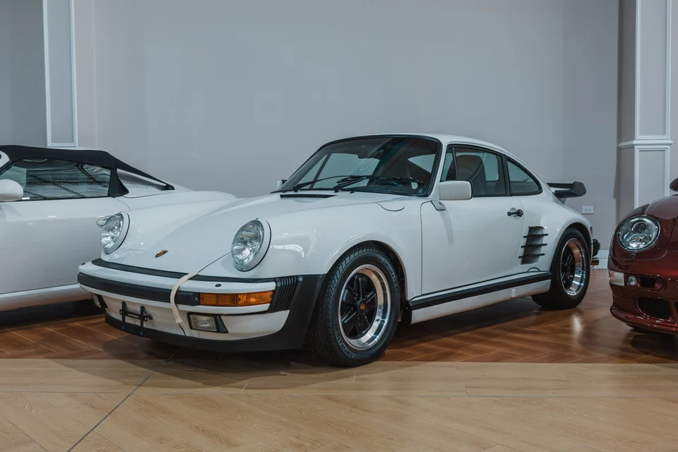
Porsche 911 GT3 · 2010
Una pieza. Muchas historias.
Acércate al diseño que hizo época.
Descubrir por dentro ↗
01 / 03
Porsche 911 GT3
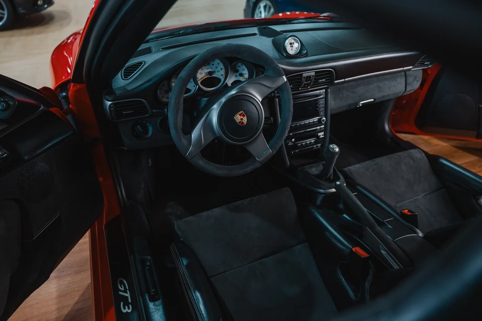
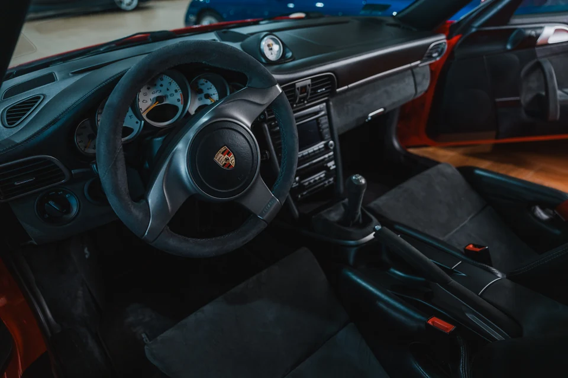
Desde dentro
El detalle lo cambia todo.
Sigue bajando para entrar en la experiencia.

ARTECH / EXPERIENCIA 360
Porsche 911 Turbo
1986
01 / 06
Preparando la vista…
No pudimos cargar esta vista.
← Back to Home
Contact us
Book your visit or book a private experience. Our bilingual team replies within 24 hours.
ARTECH / RESTAURANTE · CAFÉ · BAR
COCINA CON
KILOMETRAJE.
Una pausa que también forma parte del recorrido.

UNA MESA ENTRE CLÁSICOS
Quédate un poco más.
Cierra la visita con una buena conversación. Nuestro equipo te ayudará a coordinar la mesa y el horario.
Consultar por una mesa ↗El equipo confirma la disponibilidad por WhatsApp.
← Back to Home
THE JOURNAL
Stories from the Museum
Classic cars, restoration and the culture behind the collection in Lima.
Tu próxima visita a ARTECH.
Demostración · Sin cobros ni entradas válidas.
Tu experiencia
Experiencia VIPMuseo + taller · 1 h 30 min
Elige una fecha
Elige un horario
Visitantes
S/ 120 por adulto
Niños o adultos mayores
Sus tarifas se consultan con el museo.
Niños
Adultos mayores
ARTECH-DEMO-001
MUESTRA · NO VÁLIDO
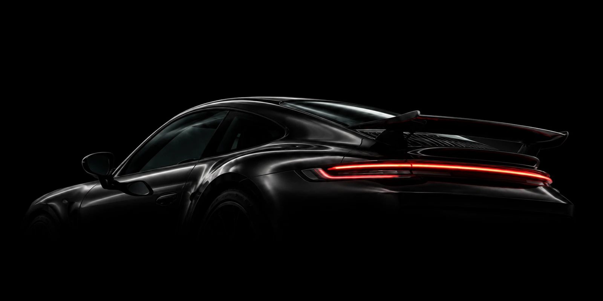
LOCATION
Find us in Chorrillos, Lima
The Museum opens its doors in Chorrillos, in a permanent covered exhibition hall. English-speaking staff, credit cards accepted, and parking available for visitors.
AddressAv. Huaylas 640, Chorrillos, Lima
HoursTuesday to Sunday · 9 am – 7 pm
WhatsApp+51 992 432 455
Emailinfo@artech.pe
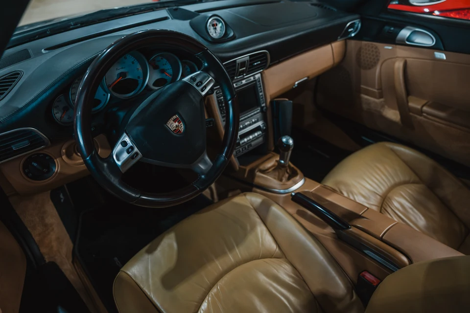
Experiencias
Todo empieza con un detalle.
Elige un detalle. Entra en el habitáculo.
Toca los puntos y descubre el interior.
El recorrido
Ahora, míralo desde dentro.
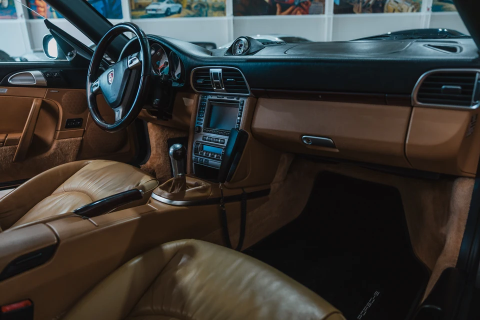
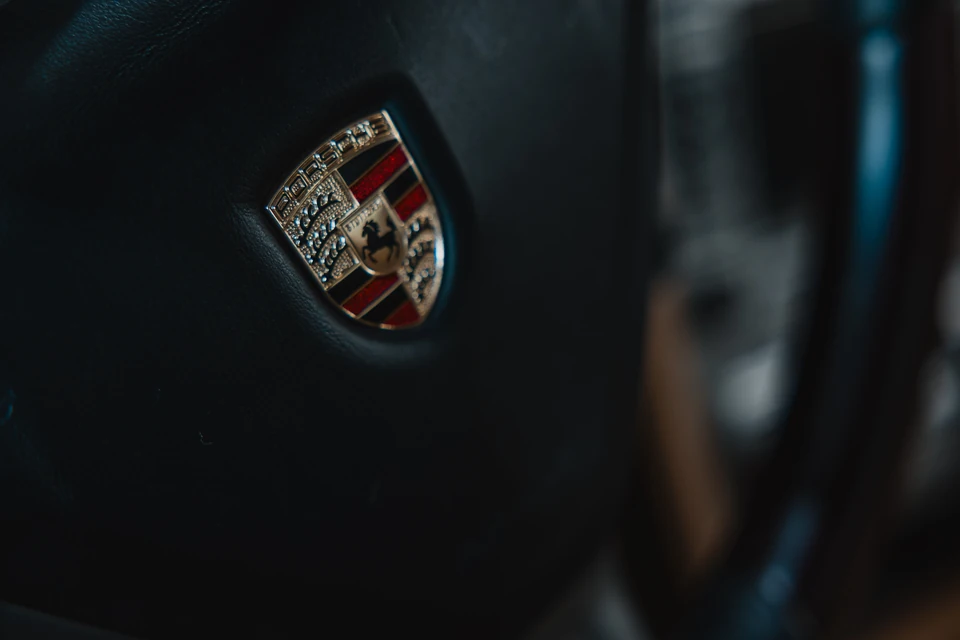
01 / El habitáculo
00:24
Recorrido fotográfico de la colección.
Tu visita
Elige hasta dónde quieres entrar.
Experiencia Artech
Recorrido por el museo
Elegir experiencia ↗
Experiencia VIP
Museo y visita al taller
Elegir experiencia ↗Experiencia privada
Una visita para tu grupo
Consultar visita ↗La próxima historia empieza contigo.
Elegir fecha ↗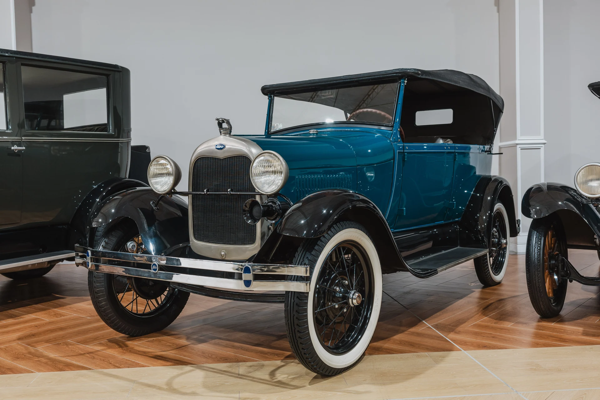
ARTECH / HISTORIA
ESTO NO ES UN GARAJE.
Una colección construida para preservar la historia del automóvil y compartirla.
UNA COLECCIÓN. MUCHAS VIDAS.
RESCATAR.RECONSTRUIR.COMPARTIR.
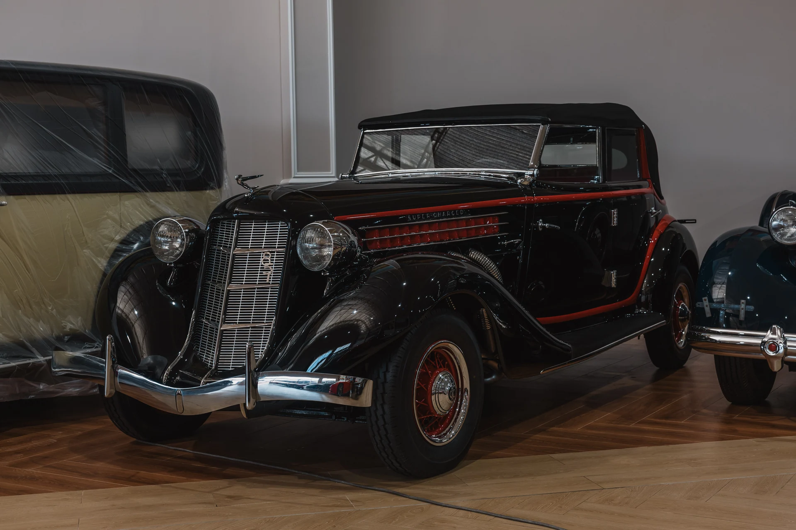
JIMMY / EL ORIGEN DE LA COLECCIÓN
UNA HISTORIA QUE SE CONSTRUYE PIEZA A PIEZA.
Durante décadas, Jimmy ha rescatado, restaurado y preservado la historia automotriz en Lima. Artech reúne ese trabajo y abre la colección a quienes quieren conocerla de cerca.
CONOCER LA COLECCIÓNEL TIEMPO, EN LA COLECCIÓN
CADA ÉPOCA DEJA UNA HUELLA.
Los años corresponden a los vehículos del catálogo, no a fechas de fundación del museo.
HOY / LA COLECCIÓN
El trabajo continúa detrás de cada pieza. Descubre dónde una parte de esa historia vuelve a tomar forma.
ENTRAR AL TALLER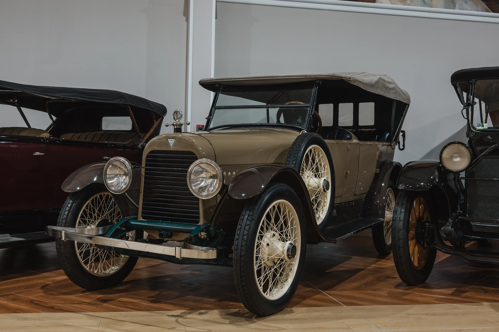
ARTECH / ARCHIVO AUTOMOTOR
LA COLECCIÓN.
Cada pieza, una historia. Acércate y descubre sus detalles.
Explora la colección ↓96Vehículos en catálogo
40Marcas identificadas
115Años de historia1903 — 2018
Encuentra tu próxima historia.
La colección96
Cargando colección…
No encontramos piezas con esos filtros.
ARCHIVO ARTECH
Fotografías de esta unidad pendientes de identificación.
La colección
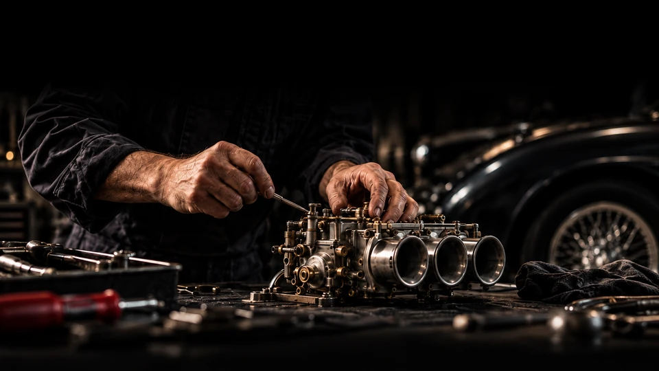
El taller
Lo extraordinario también se hace a mano.
Descubre el oficio detrás de cada pieza.
Explorar el proceso ↓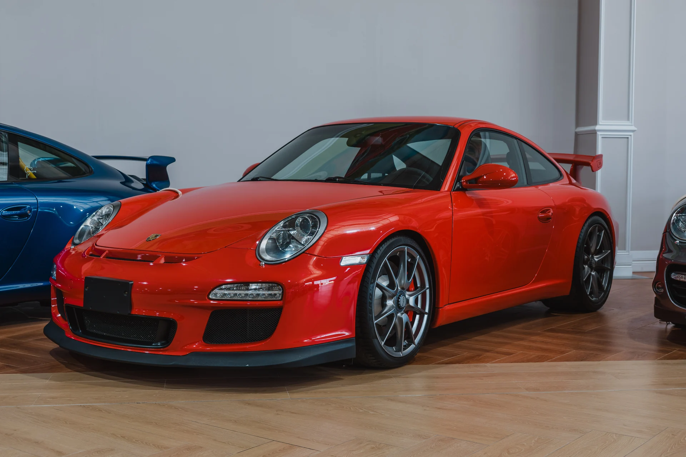
01 / Carrocería
La precisión empieza en la forma.
Una curva conduce a la siguiente. Acércate a las superficies, los encuentros y los reflejos que definen la silueta de cada automóvil.
Diagnóstico
Leer las líneas, las superficies y el estado de cada pieza.
Ajuste
Trabajar las uniones y recuperar la continuidad de la forma.
Acabado
Revisar las superficies y los encuentros bajo la luz.

02 / Mecánica
Cada ajuste tiene un propósito.
Antes del movimiento, está el detalle. Una pieza, una herramienta y la atención necesaria para entender cómo trabaja cada mecanismo.
Desmontar
Entender la función y el estado de cada componente.
Ajustar
La precisión se construye pieza a pieza, con atención al detalle.
Comprobar
Volver al conjunto: revisar cómo trabaja cada mecanismo.
03 / Interiores
El tacto también cuenta una historia.
El interior se descubre de cerca: la textura del cuero, el ritmo de una costura y las formas que acompañan a quien conduce.
Materiales
Descubrir la textura, el color y el carácter de cada superficie.
Costuras
Seguir cada línea y respetar las formas del interior.
Terminaciones
Revisar el ajuste de las piezas y la continuidad de los detalles.
← Back to Home
THE ARTECH STARS
Affiliated Workshops
The houses of craft that keep this collection alive. ARTECH stars are awarded on the work actually done, across five criteria.
The rating
Every workshop is scored from one to three stars on each of these five criteria.
The main workshop
Allied workshops
Every workshop is visited and reviewed once a year. The stars are awarded by ARTECH and may change from one edition to the next.